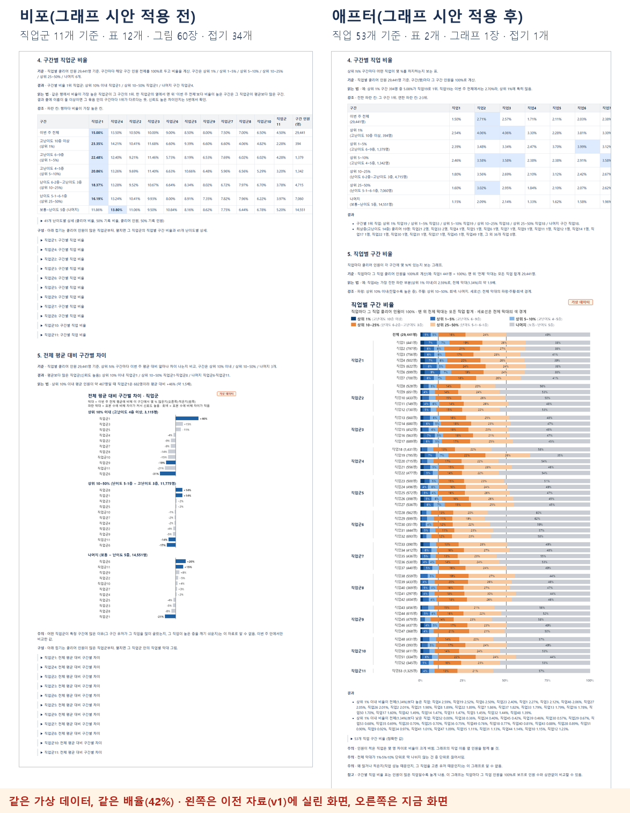
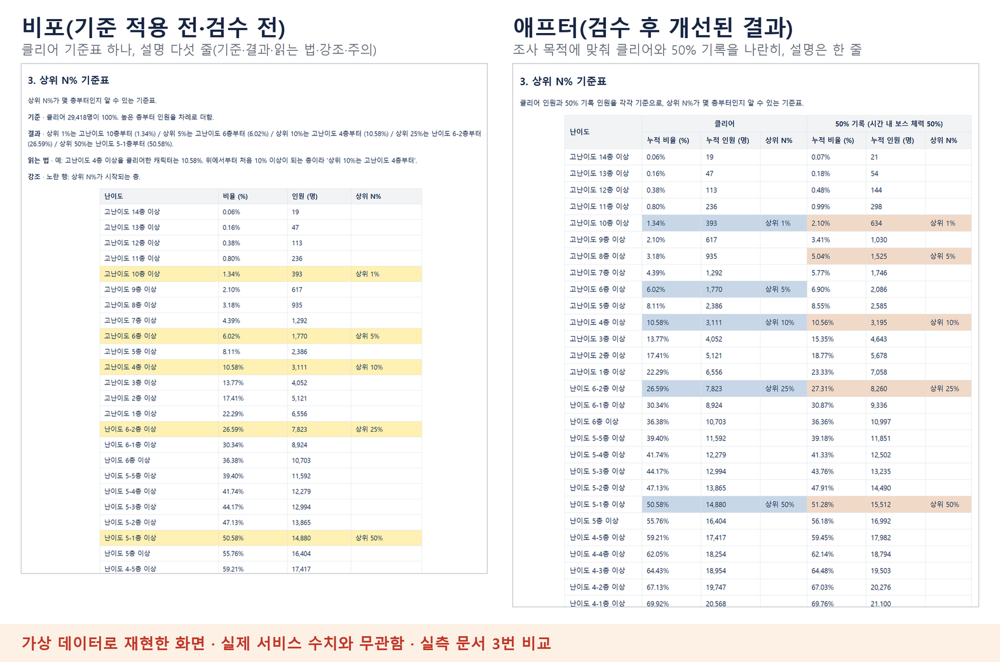
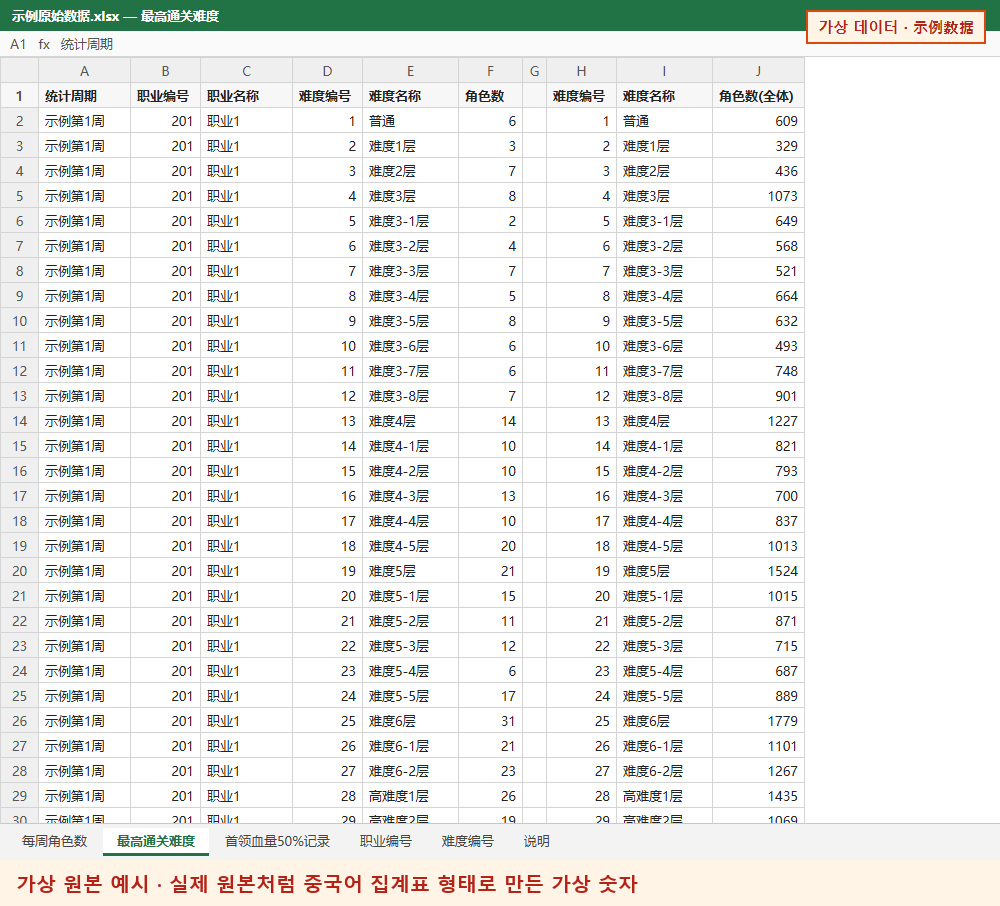

- 63→4장페이지 그림
- 몇 초원본 엑셀 → 실측 페이지
- 약 2개월로그 요청부터 자동화까지
- 7일AI 실작업 (약 열흘 중)
이 페이지의 화면은 모두 가상 데이터로 재현했습니다. 숫자와 이름은 실제 서비스 수치와 무관합니다.
측정 데이터가 없던 콘텐츠
자세히 보기
높은 난이도를 깰수록 스펙이 높다는 뜻인 콘텐츠로, 콘텐츠 개발자가 목표 이용자 범위와 개발 난이도를 판단할 때 참고합니다.
해외 현지 DB와는 PM과 사내 통역을 거쳐 협의했고, 3~4년 전 기준이던 DB의 난이도·직업 정보를 최신 체계로 바꾸는 데 참여했습니다.
요청 경로를 정리한 팀 공유 문서는 작성 예정입니다.
같은 데이터, 읽히는 자료로

AI에게 고칠 곳보다 이유를 줬습니다
독자를 먼저 정함
데이터 담당자와 기획자로 나누고 기준 문서도 둘로
원칙으로 지시
한 문단엔 정보 한 종류, 표는 읽는 순서대로
독자의 말로
통계 용어·판단어 대신 사람 수와 사실로
| AI가 처음 쓴 문장 | 고친 문장 |
|---|---|
| 전체보다 뚜렷이 많은 직업군 | 평균보다 많은 직업군(신뢰도 높음) '뚜렷이'는 기준이 없는 판단어 |
| 파란 막대 = 우연으로 보기 어려운 차이 · 회색 = 인원이 적어 우연일 수 있음 | 파란 막대는 신뢰도가 높음, 회색 막대는 표본 수에 비해 차이가 작음 '우연'은 통계 용어 |
| 직업군1 +46%: 이번 주 전체 비율대로라면 상위 10% 이내에 약 467명일 텐데 실제로는 682명 (약 1.5배). | 상위 10% 이내 평균 인원이 약 467명일 때 직업군1은 682명이라 평균 대비 +46% (약 1.5배) 조건 → 값 → 결론 순서 · 이름과 숫자는 가상 데이터 값 |
자세히 보기
AI의 첫 결과물은 숫자는 정확했지만 표만 길게 이어져, 데이터 전문가가 아닌 기획자는 읽기 어려웠습니다. "정리는 깔끔한데 왜 읽기 어려운가"를 따져 원칙으로 지시했습니다.
삭제나 큰 구조 변경은 AI가 추천과 이유를 먼저 내고, 결정은 제가 했습니다.
오독을 막으려고 '이 자료만으로 판단하지 않는 것'과 '해석 주의'를 따로 두었습니다. 예: 어떤 직업군이 특정 구간에 많은 이유는 이 자료로 알 수 없음.
여러 AI로 검수하고, 고친 기준은 규칙으로
Codex·Gemini에 검수 틀
평가서와 검수 틀을 주자 원본 전수 대조와 모순 찾기까지
헷갈리는 제안은 직접 걸러냄
단서·통계 용어를 늘리는 제안은 '곁가지 문구 금지' 규칙으로
같은 지적은 두 번 없게
지시문 · AI 기억 · 전역 규칙 세 곳에 남김
자세히 보기
Claude가 만들고 검수 의견의 타당성을 정리했습니다. 검수는 Codex와 Gemini가 맡았고, 최종 결정은 제가 했습니다.
첫 검수는 제안 목록을 되묻는 수준이었습니다. 검수 AI에게 평가서와 검수 틀(요청서, 사전 지식, 확인 범위, 답변 형식)을 주자 전수 대조와 모순 찾기까지 했고, 마지막 회차에는 원본과 대조해 '게시 가능'을 판정했습니다.
고친 기준은 다음 담당자와 다른 AI가 읽는 지시문, 같은 작업을 다시 여는 AI의 기억, 모든 대화와 프로젝트에 적용되는 전역 규칙에 남겼습니다.
그래프 시안으로 다시 설계했습니다

자세히 보기
첫 판을 만든 뒤 이틀 동안 실측 페이지와 기준 문서를 거의 새로 설계했습니다. 엑셀로 만든 그래프 시안과 '섹션마다 한 줄 설명, 빙빙 돌려 말하지 않기'라는 원칙을 기준으로 삼았습니다.
정확한 값은 접기 표 하나에 두었습니다. 그래프로 요청한 부분이 표로 나온 일은 "시안의 형태는 바꾸지 않고, 바꾸고 싶으면 따로 묻는다"는 규칙으로 남겼습니다.
검수해 한 번 더 덜어냈습니다

원본만 넣으면 매주 나오는 자료
- 원본 엑셀
- 원본 확인
- 집계
- 그래프
- 실측 페이지 조립
- 자체 검증
- 게시
- 게시 후 대조
숫자를 추측해 채우지 않고, 원본 합계가 맞지 않으면 억지로 맞추지 않고 그대로 표시합니다.
